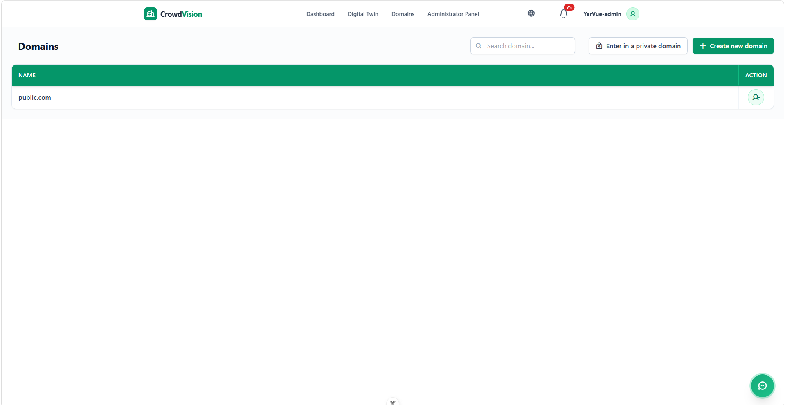

/
User Guide
A domain is an organization or environment you belong to. The Domains view lists every domain linked to your account and the role you hold in each.

Figure 1 — The Domains view: a control bar on top, your domains and roles below.
The table lists the main domains and subdomains you are a member of, with the role you hold in each (for example administrator, staff, or standard). To configure a domain you administer, open the Administrator Panel.